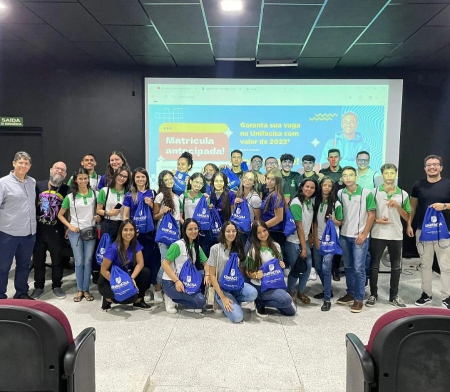
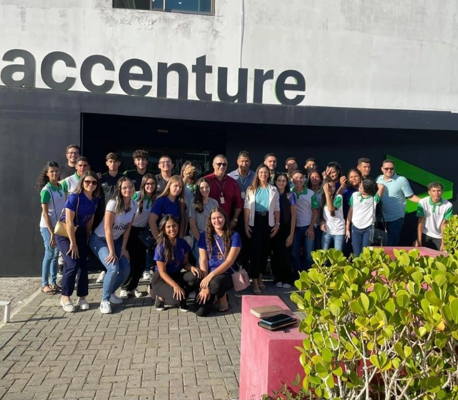
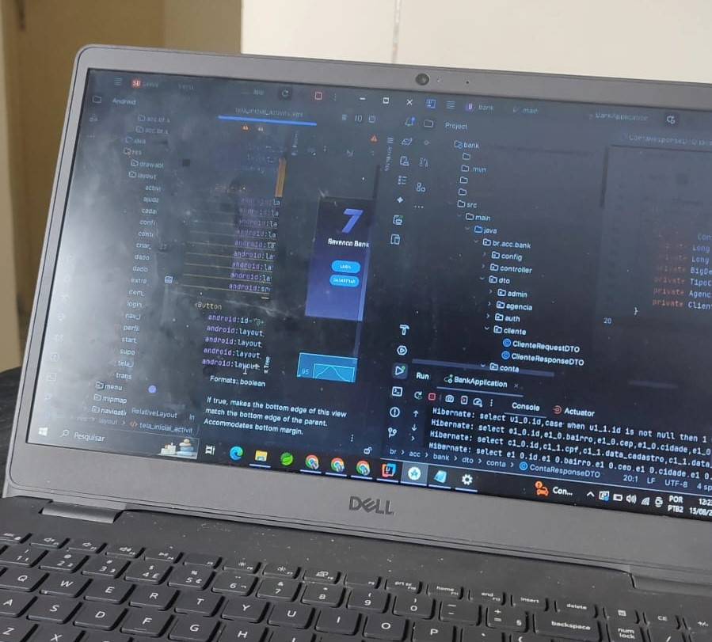
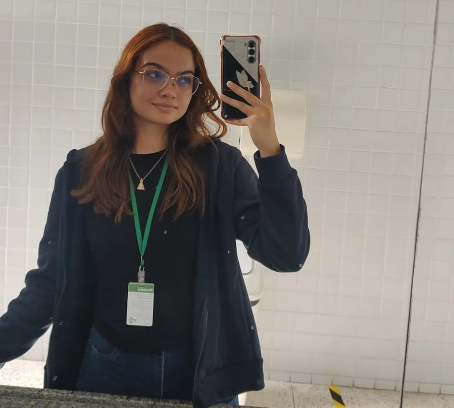

- Home
- Quem sou
- Serviços
- Criação de aplicações completas, desde a modelagem de dados até a interface do usuário.
- Desenvolvimento de sites e sistemas responsivos utilizando HTML, CSS, JavaScript, React e Angular.
- Construção de APIs robustas e escaláveis com Spring Boot e Node.js.
- Desenvolvimento de aplicativos Android nativos com Kotlin e Retrofit.
- Instalação e manutenção de softwares, redes e hardware.
- Administração de servidores Windows e Linux, incluindo configuração e gerenciamento de redes.
- Virtualização de ambientes com VMware para otimização de infraestrutura.
- Formatação e manutenção de computadores, garantindo melhor desempenho.
- Gerenciamento e otimização de bancos de dados MySQL e SQL.
- Automação de processos com Python e Java, reduzindo tarefas repetitivas e aumentando a produtividade.
- Implantação e gerenciamento de aplicações em serviços de nuvem, garantindo escalabilidade e segurança.
- Uso de Docker para criação e gerenciamento de containers, facilitando a portabilidade e o desenvolvimento de aplicações.
Bem-vindo ao meu blog! Aqui compartilho minhas experiências e aprendizados. Meu objetivo é criar um espaço onde possamos trocar ideias, aprender juntos e explorar novos horizontes. Sinta-se à vontade para navegar pelas minhas postagens e conhecer um pouco mais sobre mim.
Olá! Meu nome é Letícya Moreira Queiroz, sou uma entusiasta da tecnologia e apaixonada por inovação. Desde pequena, sempre fui curiosa sobre como as coisas funcionam, o que me levou a seguir carreira na área de desenvolvimento de software. Abaixo tem uma tabela com minhas formações acadêmicas:
| Grau | Instituição | Ano de inicio | Ano de conclusão | Status |
|---|---|---|---|---|
| Ens. Fundamental 1 e 2 | Colégio Diocesano Dom João da Mata | 2011 | 2020 | Concluido |
| Téc. Informática intregado ao médio | Instituto Federal da Paraíba- Campus Itaporanga | 2021 | 2023 | Concluido |
| Bacharelado em Sistemas de Informação | Centro Univertário Unifacisa | 2024 | ___ | Cursando |
Minha jornada na área de Tecnologia da Informação começou com o curso técnico de Informática integrado ao ensino médio, que foi a minha grande virada de chave. Através dele, tive a certeza de que queria seguir carreira em T.I, com foco na área de desenvolvimento.
Durante o curso, tive a oportunidade de estagiar como suporte técnico no Instituto Federal (IF), experiência que começou em outubro de 2022 e se encerrou em janeiro de 2024, após a entrega do meu TCC e meu desligamento da instituição.
Esse período foi fundamental para o meu crescimento, pois enfrentei diversos desafios que me ajudaram a desenvolver habilidades técnicas e interpessoais. Além do estágio, também participei de projetos voluntários com o objetivo de ampliar meus conhecimentos e compartilhar aprendizado com outras pessoas.
No final do curso tive a oportunidade de fazer uma visita técnica em Campina Grande-PB, onde a minha turma foi levada para conhecer o parque tecnológico, a Accenture, a Unifacisa e o Museu Digital. Segue abaixo imagens dessas visitas:
 
Essas experiências fortaleceram ainda mais minha paixão pela tecnologia e meu desejo de atuar como desenvolvedor, sempre buscando aprendizado contínuo e novos desafios.
Atualmente, estou cursando S.I na Unifacisa e trabalho na Accenture como Dev Cloud, atuando em um projeto do Banco do Brasil. Mas fui contratada como Dev Java, através de uma academia de java que fiz na empresa em julho de 2024 que teve duração de um mês e os participantes eram avaliados conforme suas entregas diárias e com a apresentação de um projeto final que foi desenvolvido em trio. Segue abaixo uma imagem de quando eu estava fazendo o projeto e uma foto minha na empresa.
 
Desenvolvimento de Software e Aplicações
Suporte Técnico e Infraestrutura
Banco de Dados, Automação e Serviços em Nuvem